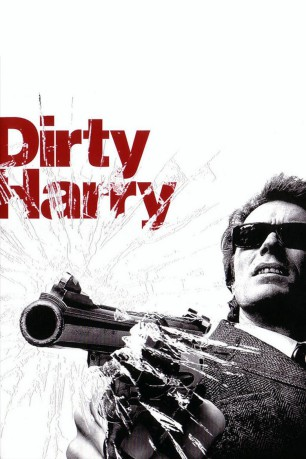

#1311 Dirty Harry 1
 
 IMDB-Wertung: 7.8 / 10
IMDB-Wertung: 7.8 / 10  Metascore: 90
Metascore: 90 
Ein unbekannter Killer tötet vom Dach eines Wolkenkratzers aus ein ahnungsloses Mädchen. Der Täter, der sich selbst "Scorpio" nennt, droht mit weiteren Morden und fordert Lösegeld. Der Bürgermeister beauftragt Inspektor Harry Callahan damit, den Killer schnellstens zu fassen. Callahan, ein zynischer Einzelgänger, ist für seine harten, wenn auch effektiven Ermittlungsmethoden bekannt und hat regelmäßig Ärger mit seinen Vorgesetzten.
Jahr: 1971
Dauer: 102 Minuten
FSK: 16
Land: USA Studio: Warner Bros. WB A Kinney Leisure ServiceTonspuren:
Untertitel:
Auflösung: 1080p (1920x800) Größe: 3901 MB
Genre: Action, Krimi, Thriller
Regisseur: Don Siegel
Drehbuch: Harry Julian Fink, Rita M. Fink, Dean Riesner, Harry Julian Fink, Rita M. Fink
Soundtrack: Lalo Schifrin
Darsteller:
 Clint Eastwood als Harry
Clint Eastwood als Harry Harry Guardino als Bressler
Harry Guardino als Bressler Reni Santoni als Chico
Reni Santoni als Chico John Vernon als The Mayor
John Vernon als The Mayor- Andrew Robinson als Killer
 Woodrow Parfrey als Mr. Jaffe
Woodrow Parfrey als Mr. Jaffe Josef Sommer als Rothko
Josef Sommer als Rothko- Max Gail als Tunnel Hoodlum , uncredited
 Chuck Hicks als Flower Vendor , uncredited
Chuck Hicks als Flower Vendor , uncredited Richard Lawson als Homosexual , uncredited
Richard Lawson als Homosexual , uncredited Angela Paton als Homicide Detective , uncredited
Angela Paton als Homicide Detective , uncredited- Debralee Scott als Ann Mary Deacon , uncredited
 John Larch als Chief
John Larch als Chief John Mitchum als De Giorgio
John Mitchum als De Giorgio- Mae Mercer als Mrs. Russell
- Lyn Edgington als Norma
- Ruth Kobart als Bus Driver
- William Paterson als Bannerman
 James Nolan als Liquor Proprietor
James Nolan als Liquor Proprietor- Maurice Argent als Sid Kleinman
- Jo De Winter als Miss Willis
- Craig Kelly als Sgt. Reineke
- George Burrafato als Taxi Driver , uncredited
- Joy Carlin als Communications Secretary , uncredited
- Bill Couch als Suicide Jumper , uncredited
- Jana D'Amico als Third Nude , uncredited
- Tony Dario als Police Sergeant , uncredited
- Diane Darnell als Mayor's Secretary , uncredited
- Diana Davidson als Swimmer , uncredited
- Vince Deadrick Sr. als Pedestrian , uncredited
- Chuck Dorsett als TV Watcher , uncredited
- Al Dunlap als Man in Jaffe's Cafe , uncredited
 Larry Duran als (uncredited
Larry Duran als (uncredited- Denise Dyer als Bus Kid , uncredited
- Diane Dyer als Bus Kid , uncredited
- George Fargo als Homicide Detective , uncredited
- Joe Finnegan als Man in Truck , uncredited
- Leslie Fong als Man with Sam , uncredited
- Lois Foraker als Hot Mary , uncredited
- John Garber als Tunnel Hoodlum , uncredited
- Eddie Garrett als Policeman , uncredited
- James W. Gavin als Helicopter Pilot , uncredited
- David Gilliam als Homosexual , uncredited
 Don Haggerty als Minor Role , uncredited
Don Haggerty als Minor Role , uncredited- Scott Hale als Newsman , uncredited
- Jack Hanson als Bus Kid , uncredited
- Kate Harper als Underwear Chick , uncredited
- Bob Harris als Man in Truck , uncredited
- Diana Henrichsen als Hippie Chick , uncredited
- Marc Hertsens als Steve - Doctor , uncredited
Datei: X:\5-Pentalogie(A-Z)\Dirty Harry\Dirty Harry 1 (1971, FSK16, 1920x800).mkv seit 19.06.2015
Festplatte: HD Collection-3(N-Z)-6(A-Z)
 Es gibt insgesamt 8 Filme in der Gruppe '5-Pentalogie(A-Z)\Dirty Harry'
Es gibt insgesamt 8 Filme in der Gruppe '5-Pentalogie(A-Z)\Dirty Harry'